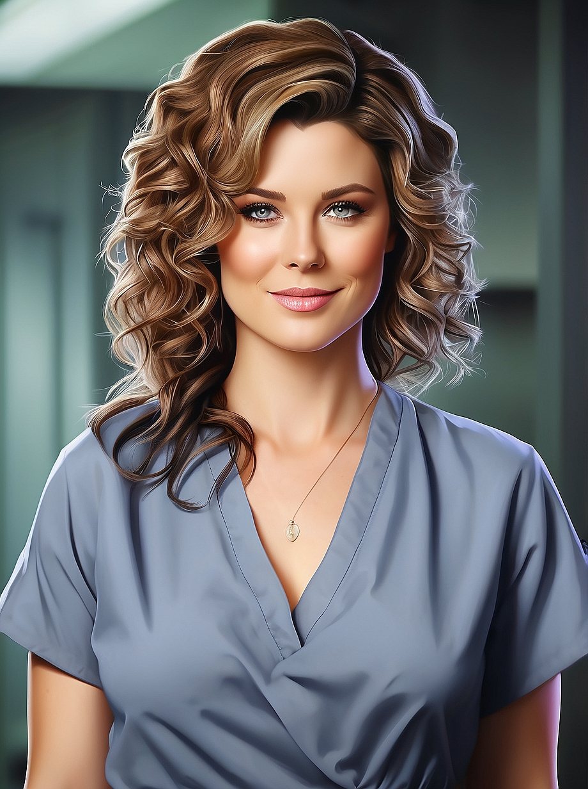
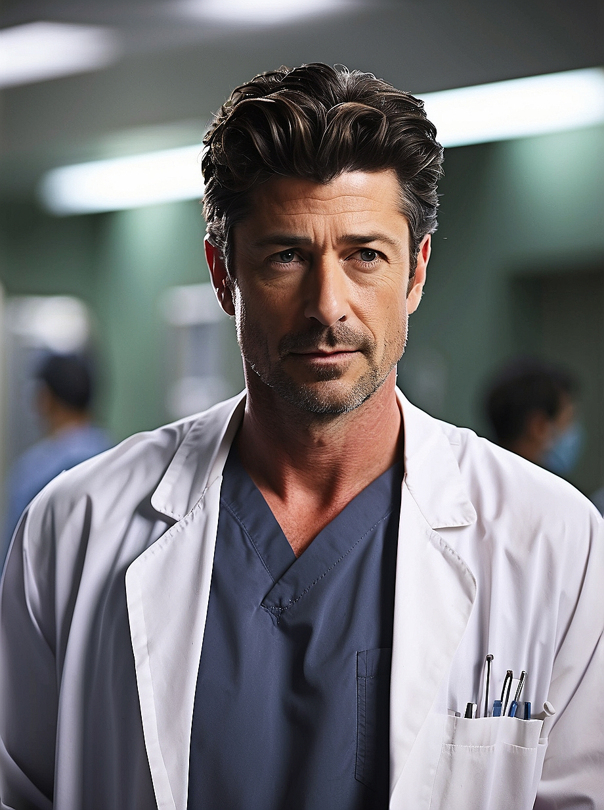
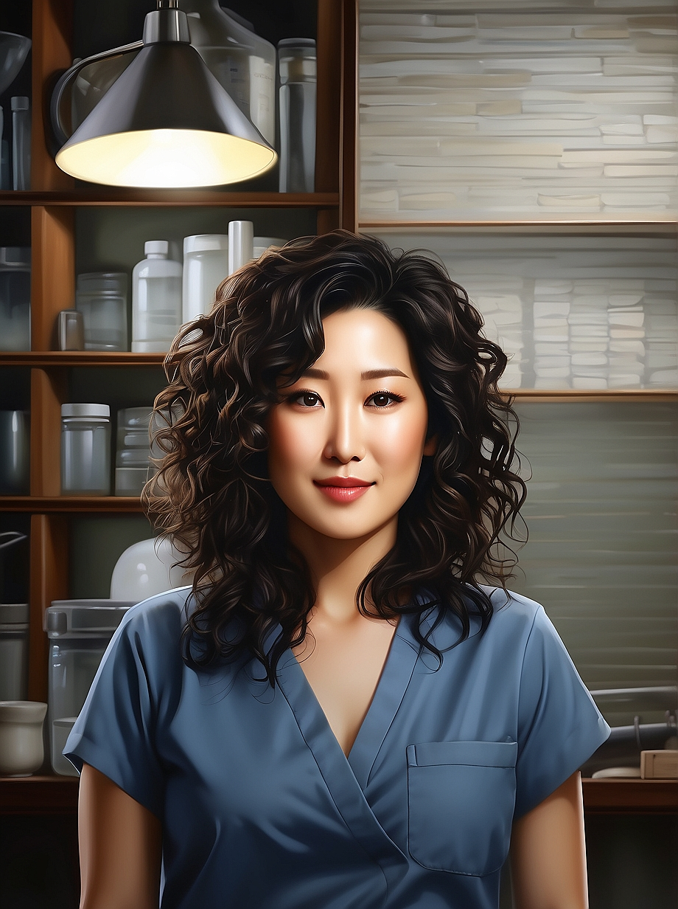
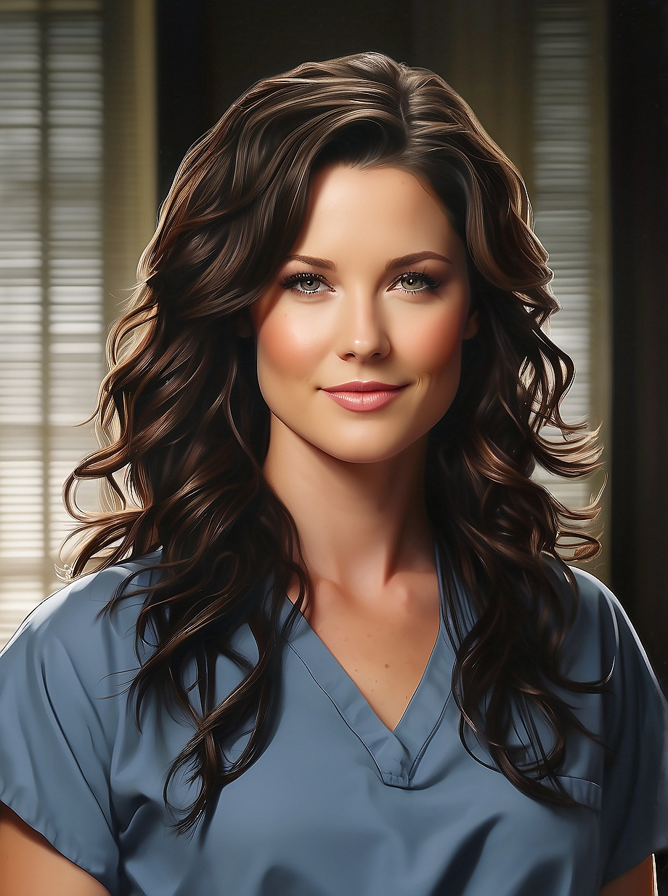
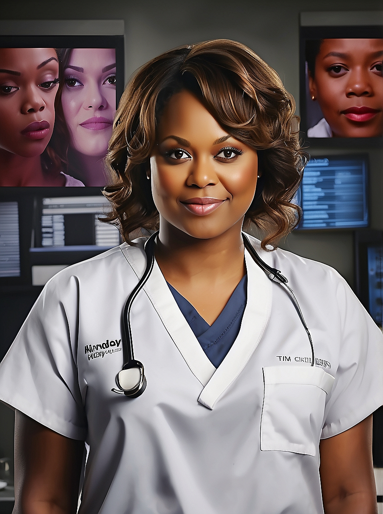
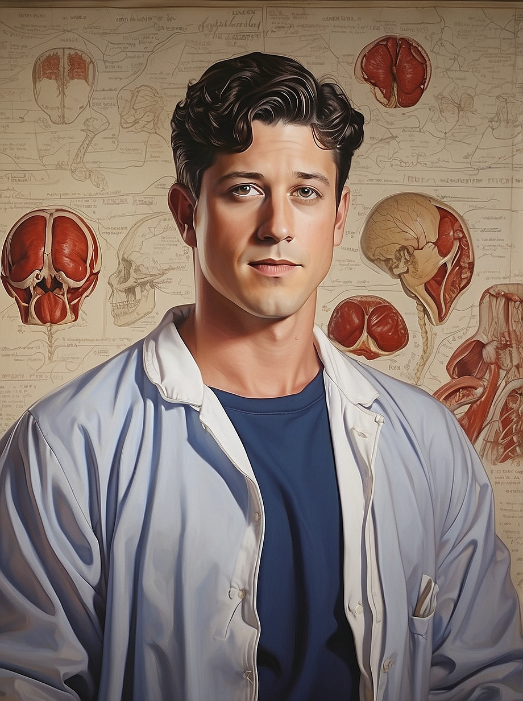

-
Meredith Grey
Descrição
Meredith Grey é conhecida por sua inteligência afiada, determinação incansável e habilidade excepcional como cirurgiã. Sua compaixão e empatia a tornam uma líder natural, capaz de inspirar e apoiar sua equipe em momentos difíceis. Além disso, sua resiliência diante de desafios pessoais e profissionais a tornam um exemplo de força e coragem.
-
Derek Shepherd
Descrição
Derek Shepherd, também conhecido como "McDreamy", é reconhecido por sua habilidade cirúrgica excepcional, liderança carismática e dedicação à medicina. Derek é admirado por sua ética profissional impecável e sua capacidade de tomar decisões difíceis em momentos críticos. Sua compaixão e empatia com os pacientes e colegas destacam sua natureza altruísta e seu compromisso com o bem-estar dos outros.
-
Cristina Yang
Descrição
Cristina Yang é conhecida por sua ambição feroz, inteligência brilhante e determinação inabalável, Cristina é uma cirurgiã excepcional. Sua ética de trabalho implacável e sua busca incessante pela excelência a destacam como uma líder na sala de cirurgia. Apesar de sua abordagem franca e focada, ela também mostra um lado compassivo e leal com aqueles que considera próximos. Sua capacidade de enfrentar desafios com coragem e sua busca pela verdade na medicina a tornam uma personagem admirável e inspiradora.
-
Lexie Grey
Descrição
Lexie Grey é reconhecida por sua gentileza, empatia e inteligência brilhante, Lexie é uma médica dedicada e compassiva. Sua disposição para ajudar os outros e seu compromisso com o bem-estar de seus pacientes a destacam como uma profissional exemplar. Além disso, sua capacidade de se adaptar a situações difíceis e seu desejo de aprender e crescer como médica a tornam uma figura inspiradora. Sua bondade genuína e seu coração generoso deixam uma marca duradoura em todos que têm o privilégio de conhecê-la.
-
Miranda Bailey
Descrição
Miranda Bailey, também conhecida como "The Nazi" (A Nazista) é reconhecida por sua liderança forte, ética de trabalho impecável e habilidades cirúrgicas excepcionais, Bailey é uma figura respeitada no Grey Sloan Memorial Hospital. Sua determinação em alcançar a excelência na medicina, juntamente com seu compromisso com a justiça e a igualdade, a tornam uma líder inspiradora. Além disso, sua compaixão e cuidado com seus colegas e pacientes demonstram sua natureza compassiva e altruísta. Miranda Bailey é uma personagem admirável, cujo impacto positivo é sentido em toda a comunidade médica.
-
George O'Malley
Descrição
George O'Malley é reconhecido por sua bondade inata, compaixão profunda e lealdade inabalável aos amigos e colegas, George é um médico exemplar. Sua disposição para ajudar os outros e seu coração generoso o destacam como uma alma gentil e altruísta. Apesar de suas inseguranças e desafios pessoais, George continua a mostrar coragem e determinação em sua jornada como médico. Sua capacidade de se conectar emocionalmente com os pacientes e sua natureza humilde o tornam uma presença reconfortante no Grey Sloan Memorial Hospital. George O'Malley é lembrado com carinho por sua autenticidade e pelo impacto positivo que deixou na vida daqueles ao seu redor.